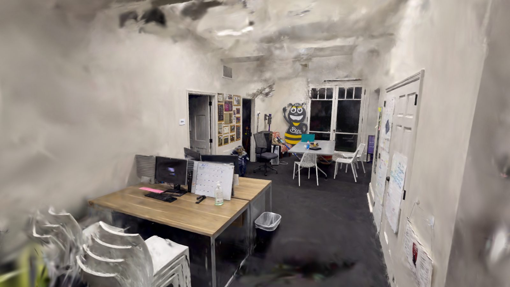
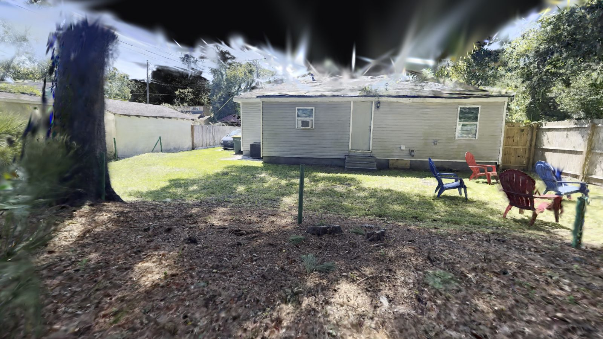

Captured Spaces
Real spaces captured on a phone and turned into Gaussian splats you can move around in, right in the browser: an office interior and a backyard exterior, both from my own capture-to-splat pipeline.
Office interior
A handheld 4K walk-through of an office, about three minutes long, with tilts up to the ceiling. Interiors are the hard case for capture: big blank white walls and ceilings give the camera solver nothing to match. COLMAP could place only 72% of 1,000 frames, even after doubling the frame density. Switching to hloc — learned SuperPoint features matched with LightGlue, with NetVLAD retrieval to choose image pairs — placed 981 of the 1,000 frames (98%) in a single model. I then trained the splat at full 1080p resolution on my 8 GB laptop GPU (splatfacto-big, 30,000 steps, about 50 minutes).

Capture lesson: keep furniture or an edge in frame. Every stretch the solver couldn't place was the camera facing bare wall or ceiling, which is also why the ceiling is the softest part of the splat.
Backyard exterior
A 1080p, 60 fps phone video of a backyard: house siding, sheds, a fence and dense planting. Trained on the school workstation (RTX PRO 6000, 96 GB) with splatfacto-big for 60,000 steps, it grew to 4.15 million Gaussians, almost three times what my laptop could fit. For the web it's reduced to 2.3 million Gaussians with base color only, at 27 MB.

How they're made
A slow handheld phone video, walking around the space.
The sharpest frame in each short window, measured by blur, rather than evenly spaced frames.
COLMAP, or hloc for low-texture interiors, with a check that stops training if only part of the video was solved.
nerfstudio splatfacto-big at full resolution, kept in the camera solve's own coordinates so the splat lines up with the tracking data.
Cleaned up, compressed to PlayCanvas SOG, and shown here with the PlayCanvas engine.
The same pipeline sits under my MFA thesis, From Capture to Cut, which works on relighting captured spaces so they can be used on virtual production LED stages.